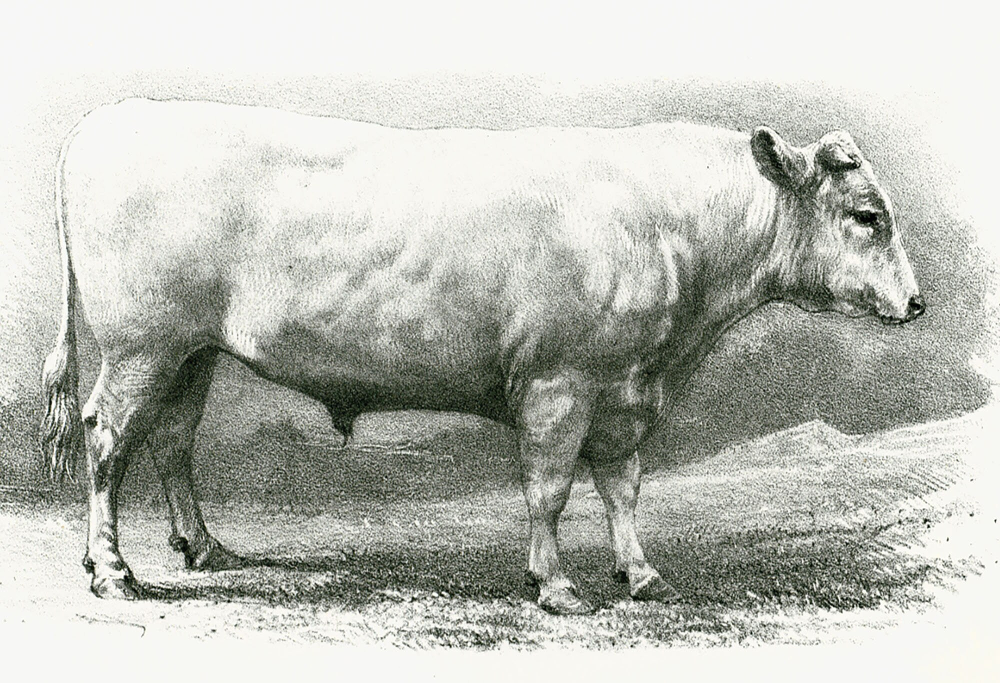
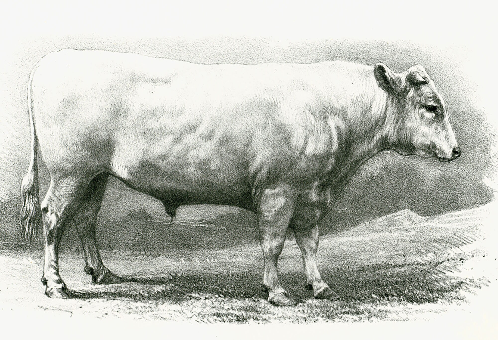

Nuestra Ganaderia Charolais
Historia
La palabra "charolais" proviene del frances. La que en español se pronuncia "charolesa". Es una raza originaria de la region de "Charollais", en el departamento de Saons-Loire en Bourgogne. Esta raza se propaga en todas las regiones del centro de Francia, ero sobre todo hacia las zonas con fuerte actividad agricola, donde los agricultores se interesan en utilizarla como animales de tiro y arado. Al mismo tiempo los ganaderos usaban estos animales para el engorde, asi tenian una buena reputacion en las competencias entre las ganaderias. En 1860 estos animales ya desarrollaban una buena genetica, en donde la poblacion de la raza llegó a las 315.000 cabezas de ganado. Pero en 1892 llego a un total de 1.128.000 cabezas, el mayor numero de animales de la raza "charolesa" jamas visto en el continente europeo. En la actualidad, esta raza esta presente en mas de 70 paises distribuida alrededor del mundo.
 
